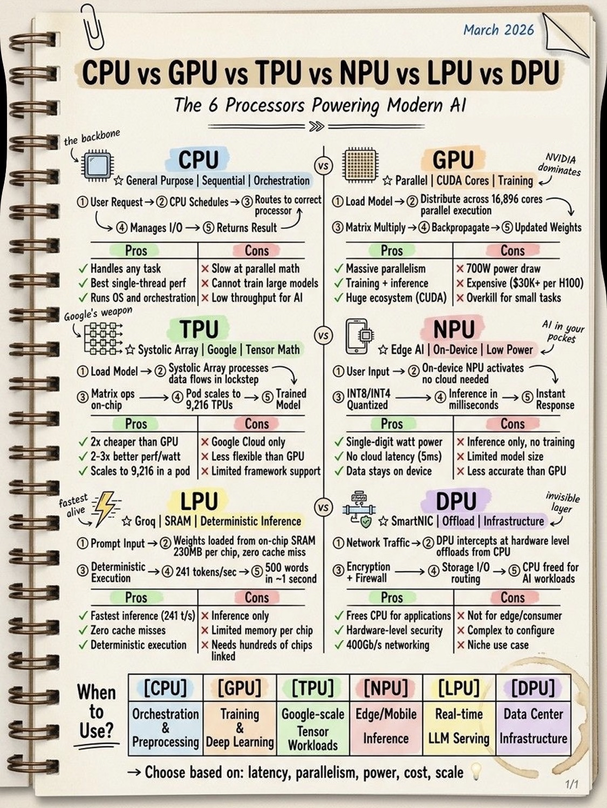

这张信息图以笔记本/活页风格，清晰对比了驱动现代AI的六种处理器：CPU、GPU、TPU、NPU、LPU、DPU。每种处理器都展示了工作流、优缺点和适用场景。对理解AI硬件生态全貌非常有帮助。
定位：通用 · 串行处理 · 调度编排
工作流：用户请求 → CPU调度 → 路由到正确处理器 → 管理I/O → 返回结果
✓ 什么任务都能跑 · ✓ 单线程性能最强 · ✓ 跑操作系统和编排
✗ 并行数学运算慢 · ✗ 无法训练大模型 · ✗ AI吞吐量低
关键认知：CPU不是被替代，而是成为AI系统的"指挥官"——负责调度其他专用芯片。
定位：并行 · CUDA核心 · 训练
工作流：加载模型 → 分配到16,896个核心并行执行 → 矩阵乘法 → 反向传播 → 更新权重
✓ 大规模并行 · ✓ 训练+推理都能做 · ✓ 庞大生态（CUDA）
✗ 700W功耗 · ✗ 贵（H100 $30K+） · ✗ 小任务杀鸡用牛刀
现状：NVIDIA通过CUDA生态建立了几乎不可撼动的护城河。AMD/Intel的GPU仍在追赶。
定位：脉动阵列 · Google · 张量运算
工作流：加载模型 → 脉动阵列处理（数据锁步流动） → 片上矩阵运算 → Pod扩展到9,216个TPU → 训练完成
✓ 比GPU便宜2倍 · ✓ 能效比高2-3倍 · ✓ 单Pod可扩展到9,216个
✗ 只能在Google Cloud用 · ✗ 灵活性不如GPU · ✗ 框架支持有限
核心优势：脉动阵列（Systolic Array）架构专为矩阵运算优化，大规模训练时性价比碾压GPU。但Google把它锁在自己的云里。
定位：边缘AI · 端侧 · 低功耗
工作流：用户输入 → 端侧NPU激活（无需云） → INT8/INT4量化 → 毫秒级推理 → 即时响应
✓ 个位数瓦特功耗 · ✗ 无云延迟（5ms） · ✗ 数据留在设备上
✗ 只能推理不能训练 · ✗ 模型大小受限 · ✗ 精度不如GPU
趋势：Apple M系列芯片的Neural Engine、高通Hexagon NPU都在这个赛道。未来每台手机/笔记本都有NPU。
定位：Groq · SRAM · 确定性推理
工作流：Prompt输入 → 权重从片上SRAM加载（230MB/芯片，零缓存未命中） → 确定性执行 → 241 tokens/sec → ~1秒500词
✓ 最快推理速度（241 t/s） · ✗ 零缓存未命中 · ✗ 确定性执行
✗ 只能推理 · ✗ 单芯片内存有限 · ✗ 需要数百芯片互联
Groq的创新：放弃传统缓存层次，全部用SRAM存权重，消除内存带宽瓶颈。代价是每芯片只能存230MB，需要大量芯片并联。
定位：SmartNIC · 卸载 · 基础设施
工作流：网络流量 → DPU在硬件层拦截（从CPU卸载） → 加密+防火墙 → 存储I/O路由 → CPU释放给AI工作负载
✓ 释放CPU给应用 · ✗ 硬件级安全 · ✗ 400Gb/s网络
✗ 不面向终端/消费者 · ✗ 配置复杂 · ✗ 场景小众
价值：在万卡GPU集群中，DPU负责网络、存储、安全卸载，让GPU专注算力。NVIDIA的BlueField DPU就是这个赛道。
| 处理器 | 最佳场景 | 关键指标 |
|---|---|---|
| CPU | 编排与预处理 | 灵活性、通用性 |
| GPU | 训练与深度学习 | 并行度、生态 |
| TPU | Google级张量工作负载 | 性价比、能效 |
| NPU | 边缘/移动端推理 | 功耗、延迟 |
| LPU | 实时LLM推理 | 吞吐量、确定性 |
| DPU | 数据中心基础设施 | 网络带宽、卸载 |
AI处理器的发展方向是越来越专用化。GPU本是为图形设计，后来"碰巧"适合AI训练；TPU/LPU/NPU则是为AI量身定制的。专用芯片的代价是灵活性下降——这就是为什么CPU永远不会消失，它是整个系统的"操作系统"。
在半导体行业中，这个趋势意味着：未来的芯片设计不再是"一颗芯片打天下"，而是异构集成（Heterogeneous Integration）。Intel的Ponte Vecchio、AMD的MI300都在走Chiplet路线，把不同功能的Die封装在一起。这跟之前每日科技讲的Chiplet/3D封装趋势完全吻合。
另一个观察：NVIDIA的统治力不仅来自GPU硬件，更来自CUDA软件生态——这就像当年Intel的x86生态。TPU/LPU想要挑战，不仅要硬件强，还要建软件生态。
Sky Portal，看到这张图有什么想法？比如：
• 作为半导体从业者，这六大处理器你最有体感的是哪个？
• 异构集成在你所在的产品线上是怎么体现的？
• 你觉得未来会不会出现第七种专用处理器？